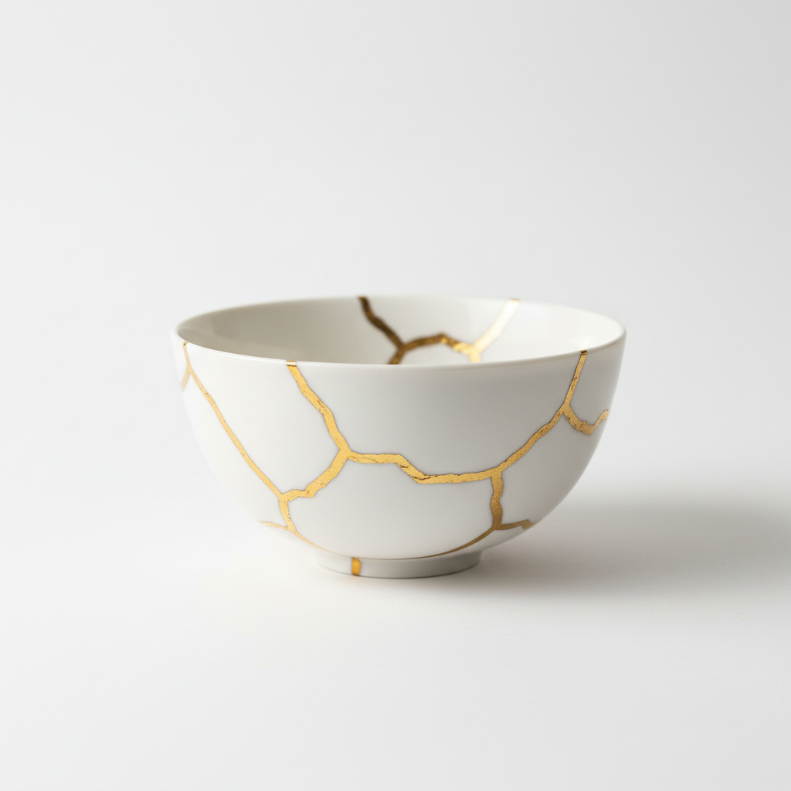

KintsuKai: Building Better, Together.
Software that grows stronger with every step forward.
The Art of the Mend
Kintsugi is the Japanese art of repairing broken pottery with gold, making the cracks part of the beauty. We see bugs the same way. Every flaw we fix openly makes our software stronger and more resilient than before.

Continuous Growth
Kaizen teaches us that small, consistent improvements lead to massive shifts. We focus on incremental, collaborative enhancements rather than disruptive overhauls.
Our Community
Everyone is welcome here. Join us to share ideas, optimize workflows, and shape the future of our tools together. This is an open space for creators, thinkers, and doers.